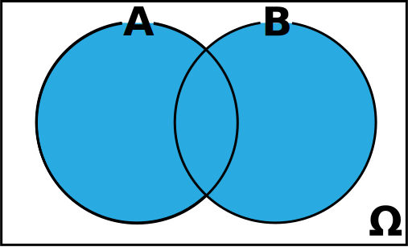
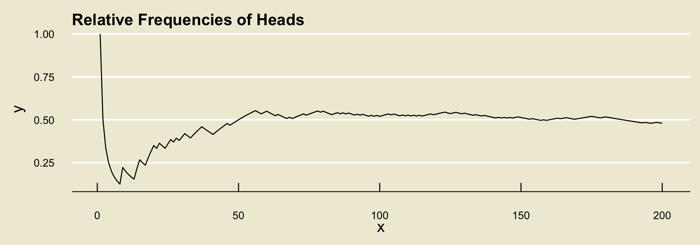

PSTAT 5A: Lecture 21
Review of Probability
Ethan P. Marzban
6/12/23
Probability
Basics of Probability
Experiment: A procedure we can repeat and infinite number of times, where each time we repeat the procedure the same fixed set of things (i.e. outcomes) can occur.
- Outcome Space: The set of all outcomes associated with an experiment
Different ways to express an outcome space: as a set, using a table (for two-stage experiments), or using a tree.
Event: A subset of \(\Omega\)
- I.e. an event is a set comprised of outcomes.
Example
Toss a fair coin twice, and record the outcome of each toss
Outcome Space:
- As a set: \(\Omega = \{(H, H), \ (H, T), \ (T, H), \ (T, T) \}\)
- As a table:
| H | T | |
| H | (H, H) | (H, T) |
| T | (T, H) | (T, T) |
Example
Toss a fair coin twice, and record the outcome of each toss
Outcome Space:
- As a tree:
Example
Toss a fair coin twice, and record the outcome of each toss
Some events:
- “At least one heads:” \(\{(H, T), \ (T, H), \ (H, H)\}\)
- “At most one heads:” \(\{(T, T), \ (T, H), \ (H, T)\}\)
- “No heads and no tails:” \(\varnothing\)
Unions, Intersections, Complements

\(A^\complement\)
(complement)
\(A \cap B\)
(intersection)

\(A \cup B\)
(union)
DeMorgan’s Laws
\((E \cap F)^\complement = (E^\complement) \cup (F^\complement)\)
- The opposite of “E and F” is “either E did not occur, or F did not occur (or both)”
\((E \cup F)^\complement = (E^\complement) \cap (F^\complement)\)
- The opposite of “E or F” is “neither E nor F occur”
Probability
Two main ways of defining the probability of an event \(E\).
Classical Approach: \(\displaystyle \mathbb{P}(E) = \frac{\#(E)}{\#(\Omega)}\)
Can be used only when we have equally likely outcomes.
Keywords to look out for: at random, randomly, uniformly, etc.
Long-Run Relative Frequency Approach: Define \(\mathbb{P}(E)\) to be the relative frequency of the times we observe \(E\), after an infinite number of repetitions of our experiment.
Relative Frequencies
Suppose we toss a coin and record whether the outcome lands heads or tails, and further suppose we observe the following tosses:
H, T, T, H, T, H, H, H, T, T
- To compute the relative frequency of
headsafter each toss, we count the number of times we observedheadsand divide by the total number of tosses observed.
| Toss | 1 | 2 | 3 | 4 | 5 | 6 | 7 | 8 | 9 | 10 |
|---|---|---|---|---|---|---|---|---|---|---|
| Outcome | H |
T |
T |
H |
T |
H |
H |
H |
T |
T |
Raw freq. of H |
1 | 1 | 1 | 2 | 2 | 3 | 4 | 5 | 5 | 5 |
Rel. freq of H |
1/1 | 1/2 | 1/3 | 2/4 | 2/5 | 3/6 | 4/7 | 5/8 | 5/9 | 5/10 |
- It turns out (by what is known as the Weak Law of Large Numbers) that, regardless of the experiment and event, the relative frequencies will converge to some fixed value.
- What the long-run frequencies approach to probability says is to define this value to be the probability of the event.

Conditional Probability
\(\mathbb{P}(E \mid F)\): represents our updated beliefs on \(E\), in the presence of the information contained in \(F\).
Only defined when \(\mathbb{P}(F) \neq 0\)
Computed as \(\displaystyle \mathbb{P}(E \mid F) = \frac{\mathbb{P}(E \cap F)}{\mathbb{P}(F)}\)
Multiplication Rule: \(\mathbb{P}(E \cap F) = \mathbb{P}(E \mid F) \cdot \mathbb{P}(F) = \mathbb{P}(F \mid E) \cdot \mathbb{P}(E)\)
Bayes’ Rule: \(\displaystyle \mathbb{P}(E \mid F) = \frac{\mathbb{P}(F \mid E) \cdot \mathbb{P}(E)}{\mathbb{P}(F)}\)
Law of Total Probability: \(\displaystyle \mathbb{P}(E) = \mathbb{P}(E \mid F) \cdot \mathbb{P}(F) + \mathbb{P}(E \mid F^\complement) \cdot \mathbb{P}(F^\complement)\)
Independence
Two events \(E\) and \(F\) are independent if any of the following are true:
- \(\mathbb{P}(E \mid F) = \mathbb{P}(E)\)
- \(\mathbb{P}(F \mid E) = \mathbb{P}(F)\)
- \(\mathbb{P}(E \cap F) = \mathbb{P}(E) \cdot \mathbb{P}(F)\)
Counting
Fundamental Principle of Counting
Fundamental Principle of Counting
If an experiment consists of \(k\) stages, where the \(i\)th stage has \(n_i\) possible configurations, then the total number of elements in the outcome space is \[ n_1 \times n_2 \times \cdots \times n_k \]
- E.g.: number of ice cream scoops consisting of one flavor (Vanilla, Chocolate, or Matcha) and the one topping (sprinkles or coconut) is \(3 \times 2 = 6\).
Counting Formulas
n factorial: \(n! = n \times (n - 1) \times \cdots \times (3) \times (2) \times (1)\)
- \(0! = 1\)
n order k: \(\displaystyle (n)_k = \frac{n!}{(n - k)!}\)
n choose k: \(\displaystyle \binom{n}{k} = \frac{n!}{k! \cdot (n - k)!}\)
- For more practice, I encourage you to take a look at Homework 2, along with some of the MT1 practice problems.
Example (Chalkboard)
Chalkboard Exercise 1
An observational study tracked whether or not a group of individuals were taking a particular drug, along with whether or not they had high blood pressure.
Blood.Pressure
Drug High Low
Not Taking 10 10
Taking 10 20A participant is selected at random.
- What is the probability that they have high blood pressure?
- What is the probability that they have either high blood pressure or are taking the drug?
- If they have high blood pressure, what is the probability that they are taking the drug?
- Are the events “taking the drug” and “having high blood pressure” independent?
Example (Chalkboard)
Chalkboard Exercise 2
A recent survey at Ralph’s grocery store revealed that 25% of people buy soda and 40% of people by fruit. Additionally, 40% of people who buy soda also buy fruit. If a customer at Ralph’s is selected at random….
- … what is the probability that they buy either soda or fruit?
- … what is the probability that they buy neither soda nor fruit?
Random Variables
Random Variables
A random variable, loosely speaking, is a variable that tracks some sort of outcome of an experiment.
- E.g. “number of heads in 10 coin tosses”
- E.g. “height of a randomly-selected building from downtown Santa Barbara”
Every random variable has a state space, which is the set of values the random variable can attain. We use the notation \(S_X\) to denote the state space of the random variable \(X\).
- If \(S_X\) has jumps, we say \(X\) is discrete.
- Otherwise, we say \(X\) is continuous
Discrete Random Variables
Discrete random variables are characterized by a probability mass function (p.m.f.), which expresses not only the values the random variable can take but also the probability with which it attains those values.
- We use the notation \(\mathbb{P}(X = k)\) to denote the probability that a random variable \(X\) attains the value of \(k\).
Expected Value: \(\displaystyle \mathbb{E}[X] = \sum_{\text{all $k$}} k \cdot \mathbb{P}(X = k)\)
Variance:
\(\displaystyle \mathrm{Var}(X) = \sum_{\text{all $k$}}(k - \mathbb{E}[X])^2 \cdot \mathbb{P}(X = k)\)
\(\displaystyle \mathrm{Var}(X) = \left( \sum_{\text{all $k$}} k^2 \cdot \mathbb{P}(X = k) \right) - (\mathbb{E}[X])^2\)
Continuous Random Variables
Continuous random variables are characterized by a probability density function (p.d.f.), which is a function \(f_X(x)\) satisfying:
- nonnegativity: \(f_X(x) \geq 0\) for all \(x \in \mathbb{R}\)
- area equals 1: the area under the graph of \(f_X(x)\) should be 1
The term density curve refers to the graph of the p.d.f.
- Probabilities are found as areas underneath the density curve
Cumulative Distribution Function: $F_X(x) = (X )
\(\mathbb{P}(X = k) = 0\) if \(X\) is continuous.
Distributions
Binomial: \(X \sim \mathrm{Bin}(n, \ p)\)
Uniform: \(X \sim \mathrm{Unif}(a, \ b)\)
Normal: \(X \sim \mathcal{N}(\mu, \ \sigma)\)
- Standardization